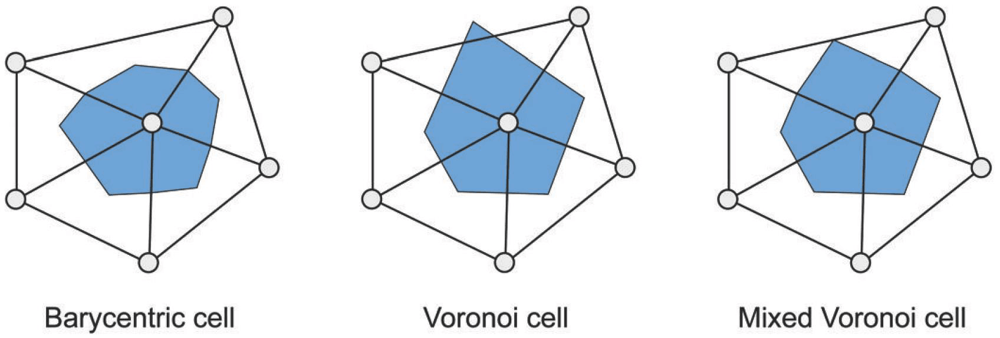
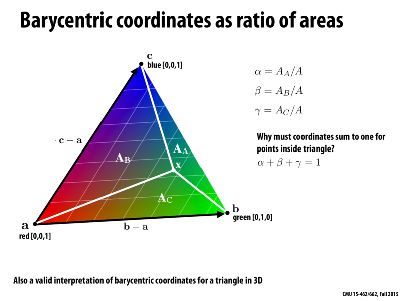
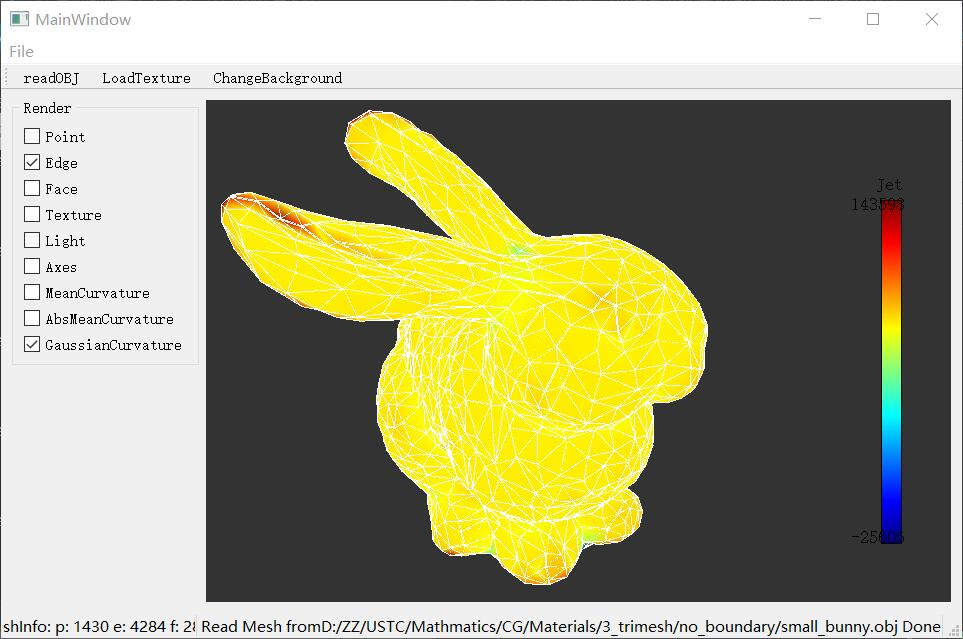
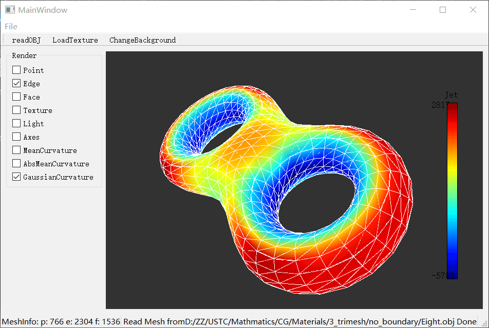
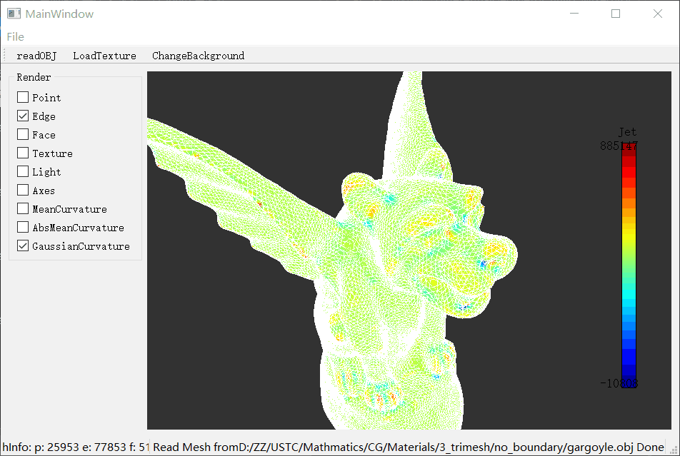

Given a piecewise liner function $$ f(x) =\alpha f_i + \beta f_j + \gamma f_k $$ Gradient: $$ \nabla_x f(x) = f_i \nabla_x\alpha + f_j \nabla_x\beta + f_k \nabla_x\gamma $$ By Caculating the Barycentric Coordinate, we have $$ \nabla_x f(x) = f_i \frac{(x_k - x_j)^ \perp}{2A_T} + f_j \frac{(x_i - x_k)^ \perp}{2A_T} + f_k \frac{(x_j - x_i)^ \perp}{2A_T} $$ Because $$ (x_k - x_j)^ \perp + (x_i - x_k)^ \perp + (x_j - x_i)^ \perp = 0 $$ Then, we have $$ \nabla_x f(x) = (f_j - f_i) \frac{(x_i - x_k)^ \perp}{2A_T} + (f_k - f_i) \frac{(x_j - x_i)^ \perp}{2A_T} $$

Uniform Laplacian: $$ \Delta f_i = \sum_{j\in\Omega(i)} (f_j - f_i) $$ or, $$ \Delta f_i = \frac{1}{N_i}\sum_{j\in\Omega(i)} (f_j - f_i) $$ Cotangent Formula: $$ \Delta f(v_i)= \frac{1}{2 A_i} \sum_{j\in\Omega(i)} (cot\alpha_{ij} + cot\beta_{ij})(f_j - f_i) $$

When applied to the coordinate function x, the Laplace Beltrami operator provides a discrete approximation of the mean curvature normal: $$ \Delta x = -2Hn $$ So absolute discrete mean curvature at vertex $i$: $$ H_i = \frac{1}{2}|\Delta x | $$
A discrete operator for Gaussian curvature: $$ K_i = \frac{1}{A_i} (2\pi -\sum_{j\in\Omega(i)} \theta_j) $$
